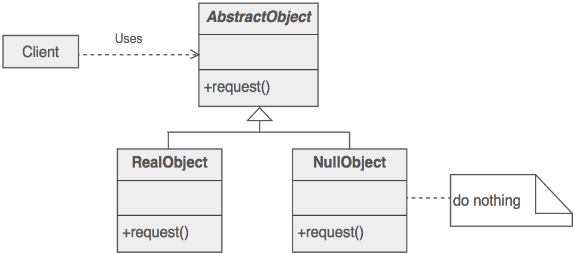

Start from "Null"
Map<String, Object> params = parseParam(paramString);
if (params != null) { // why?
String value = params.get(key);
if (value != null) // why?
doSomething(value);
}
Optional<T> from Guava
old way
String result = getSomethingMayReturnNull();
if (result == null) // may easily forget
result = "default";
print(result.toString());
with Optional<T>
String result = null;
Optional<String> opt = tryToGet();
if (opt.isPresent())
result = opt.get(); // .get() throw exception if not present
else
result = "default";
print(result.toString());
// shorter
String result = tryToGet().or("default");
print(result.toString());
Optional<T> from Guava
Use case in Guava
// com.google.common.io.File.java
public Optional<Long> sizeIfKnown()
// com.google.common.net.MediaType.java
public Optional<Charset> charset()
// com.google.common.base.Enums.java
public static <T extends Enum<T>> Optional<T>
getIfPresent(Class<T> enumClass, String value)
// com.google.common.collect.BinaryTreeTraverser.java
public abstract Optional<T> rightChild(T root);
Whenever "try to get" something, no guaranteed result
public Optional<IP> tryToResolveDomain(String domain)
Optional<T> interface
// static creation
Optional<String> strOpt = Optional.absent();
strOpt = Optional.of("string");
strOpt = Optional.fromNullable(valueOrNull);
// check and get
if (strOpt.isPresent())
string = strOpt.get();
// injection
str = strOpt.or("default");
str = strOpt.orNull();
Simplified version
// abstract, template, serializable class
public abstract class Optional<T> implements Serializable
// static creators
public static <T> Optional<T> absent() {
return Absent.withType();
}
public static <T> Optional<T> of(T reference) {
// early check to fail fast, Preconditions.checkNotNull();
return new Present<T>(checkNotNull(reference));
}
public static <T> Optional<T> fromNullable(T nullableReference) {
return (nullableReference == null) ?
Optional.<T>absent() : new Present<T>(nullableReference);
}
public abstract boolean isPresent();
public abstract T get();
public abstract T or(T defaultValue);
public abstract T orNull();
}
// final, non-public class
// hold a value
final class Present<T> extends Optional<T> {
private final T reference;
Present(T reference) { // the only constructor
this.reference = reference;
}
// explicit @Override annotation
@Override
public boolean isPresent() {
return true;
}
@Override
public T get() {
return reference;
}
@Override
public T or(T defaultValue) {
checkNotNull( // check null, Preconditions.checkNotNull();
defaultValue,
"use Optional.orNull() instead of Optional.or(null)"); // with hint
return reference;
}
@Override
public T orNull() {
return reference;
}
}
// final, non-public class
final class Absent<T> extends Optional<T> {
// singleton
static final Absent<Object> INSTANCE = new Absent<Object>();
// private constructor for singleton
private Absent() {}
// method to convert type
static <T> Optional<T> withType() {
return (Optional<T>) INSTANCE;
}
@Override
public boolean isPresent() {
return false;
}
@Override
public T get() {
// indicates programming error, fail fast
throw new IllegalStateException(
"Optional.get() cannot be called on an absent value");
}
@Override
public T or(T defaultValue) {
return checkNotNull(defaultValue,
"use Optional.orNull() instead of Optional.or(null)");
}
@Override
public T orNull() {
return null;
}
}
Null pattern

To avoid unpleasent null checks, a replacement offers "do nothing behavior"
@Autowired
MetricsClient client;
if (client != null)
client.send();
// with "null pattern"
// inject a DumbMetricsClient (extends MetricsClient)
@Autowired
MetricsClient client;
// do real job or nothing
client.send();
The other example: Joiner
Old way
StringBuilder builder = new StringBuilder();
if (parts.length > 1)
builder.append(parts[0]);
for (int i = 1; i <= parts.length - 1; i++) {
builder.append("|");
builder.append(parts[i]);
}
builder.toString();
With Joiner
Joiner.on("|").skipNulls().join("1", null, "3"); // "1|3"
Joiner.on("|").useForNull("*").join("1", null, "3"); // "1|*|3"
Joiner.on("|").skipNulls().join("1", null, "3"); // "1|3"
public class Joiner {
private final String separator;
// constructors
private Joiner(String separator) { // hide constructor
this.separator = checkNotNull(separator);
}
private Joiner(Joiner prototype) {
this.separator = prototype.separator;
}
public static Joiner on(String separator) {
return new Joiner(separator);
}
// action
public final String join(Iterator<?> parts) {
return appendTo(new StringBuilder(), parts).toString();
}
public <A extends Appendable> A appendTo(A appendable, Iterator<?> parts)
throws IOException {
checkNotNull(appendable); // check
if (parts.hasNext()) {
appendable.append(toString(parts.next()));
while (parts.hasNext()) {
appendable.append(separator);
appendable.append(toString(parts.next()));
}
}
return appendable;
}
CharSequence toString(Object part) {
checkNotNull(part);
return (part instanceof CharSequence) ? (CharSequence) part : part.toString();
}
public Joiner skipNulls() {
...
}
public Joiner useForNull(final String nullText) {
...
}
}
public class Joiner {
...
public Joiner useForNull(final String nullText) {
checkNotNull(nullText);
// anonymous class, many functional programming are done through this
return new Joiner(this) {
@Override
CharSequence toString(Object part) {
return (part == null) ? nullText : Joiner.this.toString(part);
}
@Override
public Joiner useForNull(String nullText) {
// can't do this then
throw new UnsupportedOperationException("already specified useForNull");
}
@Override
public Joiner skipNulls() {
// can't do this then
throw new UnsupportedOperationException("already specified useForNull");
}
};
}
...
}
public class Joiner {
...
public Joiner skipNulls() {
return new Joiner(this) {
@Override
public <A extends Appendable> A appendTo(A appendable, Iterator<?> parts)
throws IOException {
checkNotNull(appendable, "appendable");
checkNotNull(parts, "parts");
while (parts.hasNext()) {
Object part = parts.next();
if (part != null) {
appendable.append(Joiner.this.toString(part));
break;
}
}
while (parts.hasNext()) {
Object part = parts.next();
if (part != null) {
appendable.append(separator);
appendable.append(Joiner.this.toString(part));
}
}
return appendable;
}
@Override
public Joiner useForNull(String nullText) {
throw new UnsupportedOperationException(
"already specified skipNulls");
}
};
}
...
}
Decorator pattern
Extend the functionality of a certain object statically, or at run-time, independently of other instances of the same class